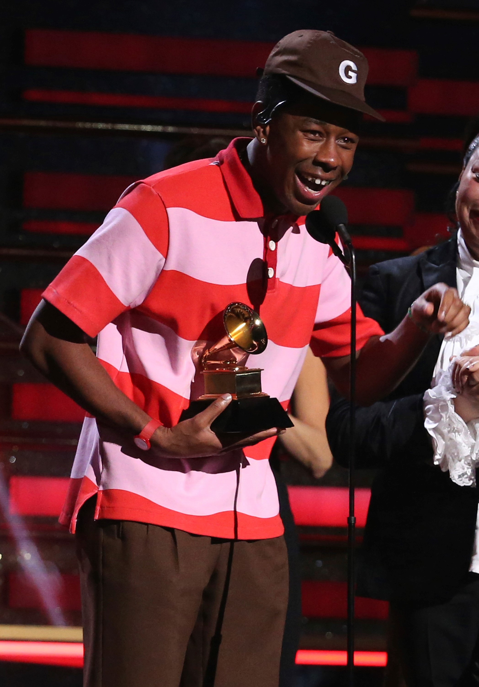
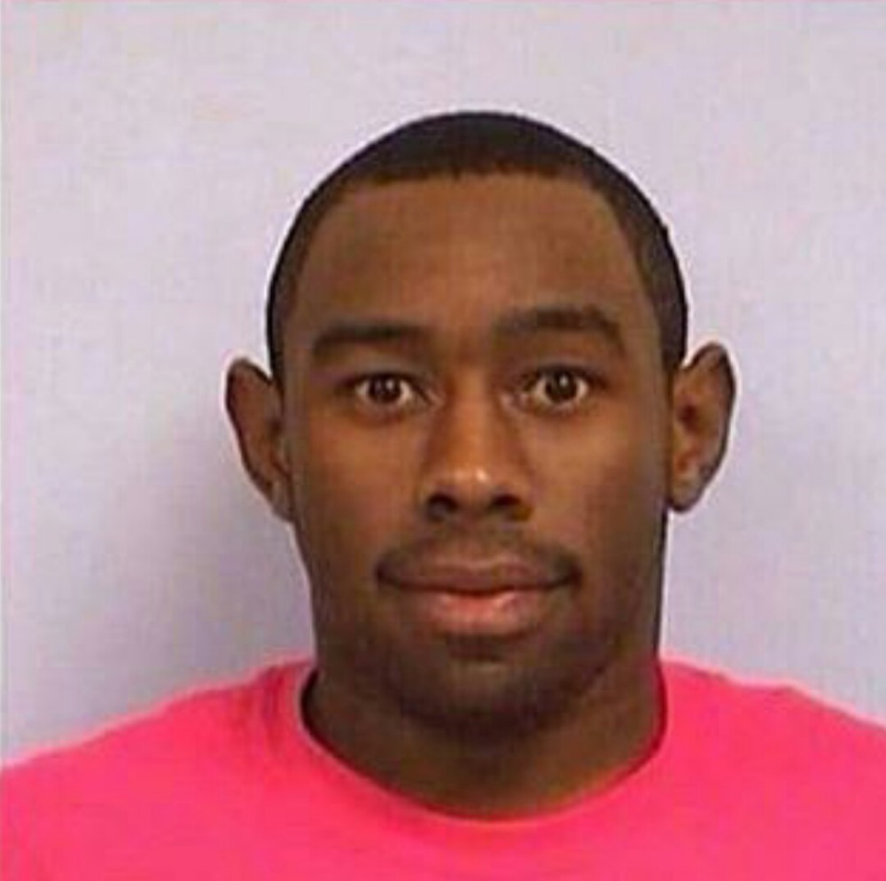
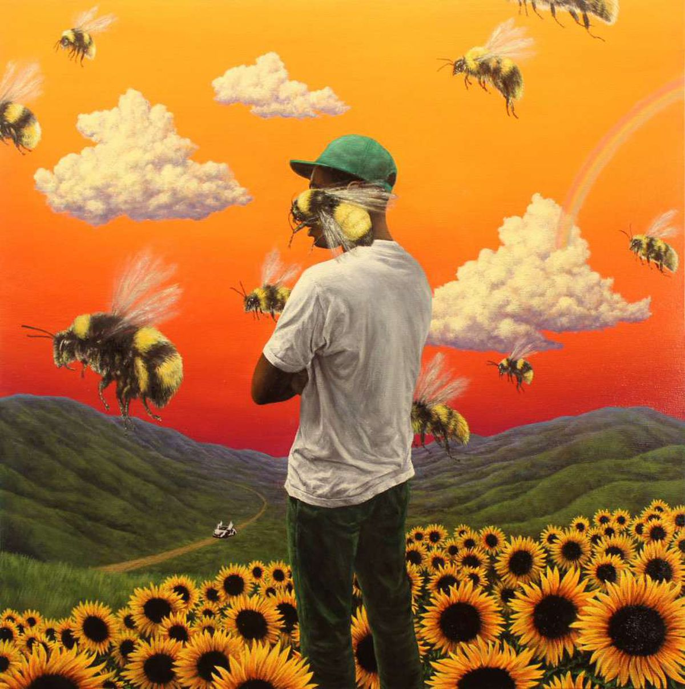

|
| Inicio |
Biografia |
Logros |
Contacto |
Tyler, the Creator |
| Se hizo conocido en los inicios de los 2010 al ser el líder y cofundador del grupo de rap Odd Future, habiendo cantado y producido casi todas las canciones de la agrupación. Como solista, Tyler lanzó un mixtape y seis álbumes de estudio, todos producidos por él mismo. |
 |
|  |
En 2011, Odd Future creó su propia línea indumentaria, Golf Wang (en relación con el nombre de la agrupación) con Tyler a la cabeza. En 2013, la marca se desafilió de la agrupación. La marca se hizo conocida por su colorida y auténtica estética, y logró establecerse a sí misma en la industria de la moda. En 2011, se abrió la primera tienda bajo Odd Future en Fairfax Avenue, Los Ángeles, hasta que en 2014 Tyler anunció por Twitter que se había cerrado. En octubre de 2017, Tyler anunció que reabriría la tienda de ropa bajo "GOLF". El local volvió a establecerse en Fairfax Aveneue, y además de vender mercadería de Golf Wang, cuenta con una pista de skate dentro. |
| El 11 de febrero de 2011, Okonma lanzó el video musical de Yonkers, que recibió atención de severos medios de comunicación online. Esto le valdría a Tyler ganar el premio por Artista Revelación en los MTV Video Music Awards de 2011. |
 |
| Todos los Derechos Reservados Andrea González 2022 © |
|